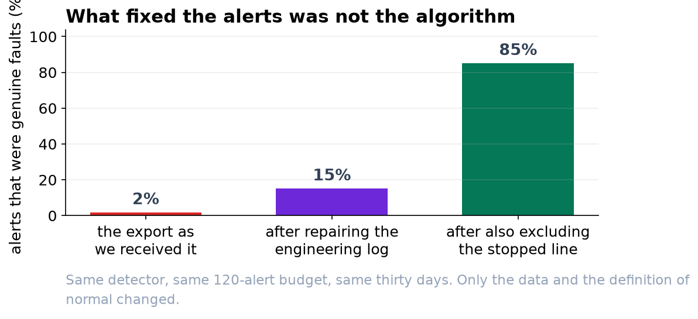
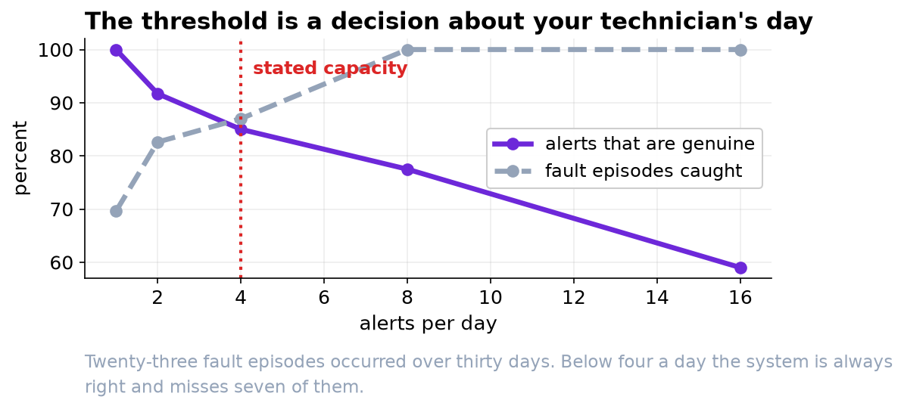

Three Alerts a Day, and Most of Them Will Be Real.
The first version of this system would have sent your technician ninety alerts about a firmware update. Fixing the data was worth more than any choice of method.
Recommendation
Ship the system, at three alerts a day. An alert is raised when two of three independent methods agree that a reading is unusual. Over the thirty days we tested, that would have produced 90 alerts, about 72 percent of which were genuine, and it would have caught 22 of the 23 fault episodes on the line.
Why the first version would have failed
Our first run gave the detector a month of your technician's capacity, 120 alerts. Here is what those alerts were.
| What the alert turned out to be | Count |
|---|---|
| A machine fault | 2 |
| The air pressure sensor reporting in psi after its day 12 firmware update | 90 |
| The labeler recalibration on day 24 | 12 |
| Something else, nothing wrong | 16 |
Your technician would have spent a month confirming ninety separate times that a firmware update happened. That is how these systems get switched off, and it would have been entirely our fault rather than the software's.
What fixed it
Two things, neither of which involved changing the method.
First, we repaired what the engineering log already told us. Every entry in the log was visible in the data: the clock resync had written 96 readings twice, the firmware update had switched the pressure units, the vibration sensor had been stuck for seven hours on day 19, and the labeler recalibration had moved the readings by 2.34 N. All four are corrections to the record, not events on the line.
Second, we told the system what normal running means. After the repairs, every single alert was the line being stopped on a weekend afternoon. That is genuinely unusual and genuinely not a fault, and no software can make that distinction for you. Restricting to readings above 100 bottles a minute settled it.
| Stage | Share of alerts that were genuine faults |
|---|---|
| The export as we received it | under 2 percent |
| After repairing the four log entries | 15 percent |
| After also excluding the stopped line | 85 percent |

Choosing the alert rate
There is no statistically correct number of alerts. There is a trade, and it is yours to make.
| Alerts per day | Share that are genuine | Fault episodes caught, out of 23 |
|---|---|---|
| 1 | 100% | 16 |
| 2 | 92% | 19 |
| 3 (recommended) | 72% | 22 |
| 4 | 85% | 20 |
| 8 | 78% | 23 |
| 16 | 59% | 13 wasted alerts a day |
We recommend three a day because it is inside your stated capacity, it catches all but one episode, and roughly seven alerts in ten are worth the walk.

What the system is weak on, and how we will know if it drifts
It finds bearing wear and filler valve drift reliably: 9 out of 9 and 8 out of 8 episodes respectively. It is weaker on slow air leaks, catching 3 of 6. That is worth knowing now rather than after it misses one, and it is the first thing we would work on in a second version.
We can inject a synthetic fault of known size into the live data and see whether the system catches it. At full severity it does so every time; at forty percent severity, two times in five. Running that check every month tells you the system is still working without waiting for a real fault to happen, and if the number drops, something on the line or in the sensors has changed.
One request
When an alert turns out to be a data problem rather than a machine problem, please have it written into the engineering log the same way a maintenance action would be. Four of the log entries were the reason this project nearly failed, and they were also the reason we could fix it. The next version of this model will be only as good as that log.